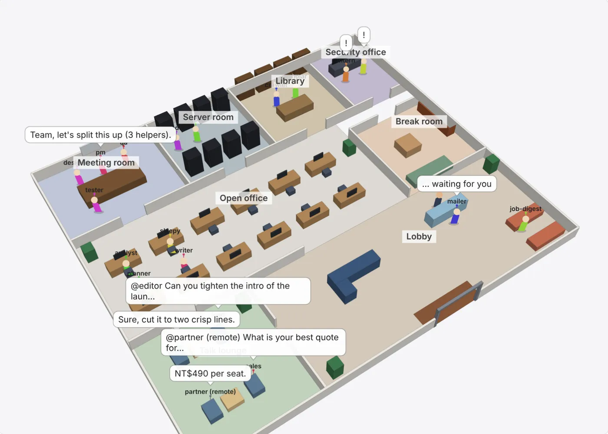

Core 本機核心
免費 MIT 開源
全部功能，包括所有安全功能、多機代理群、自我進化（預設只用免費的本機模型）與自我監督。
適用 Lite、Personal、Workstation（3 人以下）
選擇本機版下載 ↓AIOS 為 AI 代理提供排程、權限、持久記憶與隔離工具執行環境。代理會從自己的紀錄學習、自己監督自己，但改權限、改政策、改程式碼一律要你點頭。從個人電腦到自架伺服器，選擇適合你的版本。
核心免費、所有安全功能永遠不另外收費。付費的是多人管理（Team）與代管服務（Cloud）。金額為新台幣，Team 與 Cloud 為規劃價格，目前尚未開放購買。
| 方案 | 價格 | 適合誰 | 包含 | 狀態 |
|---|---|---|---|---|
| Core 本機核心 | 免費 MIT 開源 | 個人、3 人以下 | 全部功能與所有安全功能、多機代理群、聊天機器人、3D 辦公室、自我進化（預設用免費本機模型；自己設美元上限後也能用付費模型）、自我監督 | 可下載 |
| Team 自架團隊版 | NT$490 ／人／月 · 年繳 · 最少 5 人；3 人以下免費 | 在自己機器上用的團隊 | Core 全部，加上 SSO 與角色、多台機器集中管理、審計匯出、機密管理、集中管理的政策與技能、自我修補提案的集中審核佇列 | 開發中 |
| Cloud 雲端版 | NT$790 ／人／月 · 每人含 2,000 次執行（全組共用），超過每 1,000 次 NT$320 | 不想買硬體、不想維運的團隊 | Team 全部，由我們代管；自備模型 API 金鑰，模型費用直接付給供應商 | 尚未推出 |
| Enterprise | NT$650,000 ／年起 · 依需求報價 | 大型組織 | Team 或 Cloud，加上客製合約、支援與合規需求 | 洽談 |
四款套件都是同一個免費的 Core，差別在預設的模型服務、並行設定與權限政策。硬體自備，價格僅供參考。
| 套件 | 軟體費用 | 建議硬體 | 硬體參考價 |
|---|
把模型與工具連起來，也把每一次行動管起來。可接雲端模型 API 或相容的本機模型服務，依需求啟用 MCP、代理協作與自動排程。
逐一控制代理能使用的工具與路徑，敏感操作透過核准流程執行，並保留審計紀錄。
保存對話與筆記，支援關鍵字搜尋、排程任務與多代理分工。
依平台提供程序、Docker 或實驗性 microVM 後端；追蹤工具呼叫與每次任務的預算。
目前為 early alpha。P1 安全核心功能已具備，P2 擴充功能持續驗證；隔離能力依平台而異。Team、Cloud 與獨立商業模組尚在規劃／開發，產品清單不代表 Roadmap 中所有項目都已正式上市。
四款套件採用相同 MIT 開源核心，依硬體預設模型服務、並行設定與權限政策。下載按鈕直接提供本站 ZIP 檔。
每個代理都有一本會改版的「心得手冊」，從自己的審計紀錄學到教訓：哪些呼叫被拒、哪些一直失敗、哪些重複做白工。新版本要先過你的評測才會上線，退步就自動退回。守護程式也會自己處理自己的告警。兩者都包含在免費的 Core 裡。
候選手冊在一份拋棄式的資料庫與工作區副本上，和目前版本跑同一組評測任務，表現不輸才在下一次執行生效。上線後失敗變多的版本會自動退回，也可以隨時 aios improve rollback。
aios improve loop 可以一直跑：沒有新紀錄的回合不呼叫模型，評測預設只用免費的本機模型，除非你設定美元上限；--daily-tokens 用完就暫停並發出告警。
代理可以提出程式碼或政策修補（propose_patch），但只有人能套用（approve-patch），套用後健康檢查失敗會自動撤回。來自不可信內容或和防護規則有關的心得，也要等人確認。
一直失敗、一直燒光預算、或看起來被注入的定時任務會被暫停；其他代理出現同樣狀況則被「扣住」，每個高風險呼叫都要有人批准。審計日誌被竄改時全部進入安全模式。
監督者只能降低風險：它絕不會啟用任務、給予權限、修改政策或回答批准請求。全是規則，不用模型、不花錢。
解除只能由人執行 aios supervisor --release，沒有任何代理工具碰得到。每個動作都寫進審計日誌，並送到你的 Telegram。
aios bot 把一個政策代理放進 Telegram、Discord 或 LINE 聊天室（--platform）。在某則訊息底下標記它、用 /ask，或直接回覆它的回答，它就會在串裡回覆，並把被標記的那則訊息和先前的對話當成上下文。
小明 新聞說下週起捷運票價調漲 20%？
阿華 ↳ @aios_helper 這是真的嗎？
AIOS 助理 ↳ 我查了你標記的那則訊息……（在同一串裡回覆）
@標記、/ask、回覆它的訊息。加 --context N 還能參考聊天室最近的 N 則訊息。
每個問題都是全新、標記為不可信的一次執行：沒有政策時只能用唯讀工具，也沒有人能替它批准高風險操作。
只在 --allow-chat 允許的聊天室回答（或明確加 --public），每人每小時次數有限，每次回答最多 2 萬 token、每日預設 20 萬 token。
本機控制台多了 Office 分頁。每個代理都是辦公室裡的一個人，會依照它此刻在做的事走到對應的地方；兩個代理互相對話時，頭上會出現對話泡泡。

兩個代理互相呼叫（agent__／a2a__）時一起到洽談區聊；三個以上一起討論（代理群或一連串轉交）時到會議室開會。
大廳有接待櫃台、代理排隊等你核准的審批櫃台，以及即將執行的任務坐的等候區。被監督者暫停或被規則拒絕的代理在保全室，閒置的在茶水間。
畫面直接讀自審計日誌、審批、暫停與任務。可拖曳旋轉、滾輪縮放、點一個人看它在做什麼。所有名字與訊息都以文字繪製，從不當成 HTML，不用外部套件。
一台機器跑不完的大批任務（例如上千個子任務），可以讓多台電腦一起跑。架構和 vLLM、Ray 叢集一樣分成 head 與 worker：head 放任務檔、發任務、收答案；每台 worker 用自己的模型與 GPU 執行。多機功能包含在免費的 Core 裡，四種本機版都能用。
每台 worker 依自己的空位（--parallel）向 head 要任務，所以 worker 不必開 port，可以在 NAT 後面；比較快、比較大的機器自然拿得多。
執行中的節點每 10 秒送一次心跳。沉默 30 秒的節點，手上的任務改派給其他節點（最多 3 次，先回答的為準），原節點會被通知停止。
每個節點回報用掉的 token，head 的 --swarm-max-tokens／--swarm-max-cost 對整個叢集生效。head 審計每個任務由哪台節點完成，節點也在自己的 aios.db 留紀錄。
在所有機器設同一個 AIOS_NODE_TOKEN。沒設定時 head 會產生一個並印出。這個 token 能替你下任務，只在自己的機器之間共用。
在放任務檔的機器執行 aios swarm --nodes。只在本機測試時用 port 即可；要讓其他機器連進來，給 HOST:PORT 並加上 TLS 憑證。
每台 worker 用同一份 policy 執行 aios node --head URL，各自指定自己的模型。預設會繼續服務之後的代理群，加 --once 則跑完這一批就結束。
# head（放任務檔的機器）
AIOS_NODE_TOKEN=<secret> python aios.py swarm --policy p.toml --agent worker --tasks tasks.txt --out results.jsonl \
--nodes 0.0.0.0:8780 --node-cert head.pem --node-key head-key.pem --parallel 64
# 每台 worker：同一份 policy、各自的模型
AIOS_NODE_TOKEN=<secret> python aios.py node --head https://head.lan:8780 --head-ca head.pem --policy p.toml \
--provider openai --base-url http://localhost:8000/v1 --model Qwen/Qwen2.5-3B-Instruct --parallel 16$AIOS_NODE_TOKEN，沒有 token 一律拒絕。--node-cert／--node-key，worker 會驗證憑證（自簽憑證用 --head-ca），或把 head 放在 https 反向代理、tunnel 後面。worker 絕不會用明文 http 把 token 送到別台機器。transfer = true 的代理，可以把跑到一半的任務交給同一個代理群的另一台節點接著做，不必重來。aios improve，評測把關的心得手冊、即時生效、可退回，見上方。aios supervisor，自行暫停與扣住，只有人能解除。aios bot，在 Telegram、Discord、LINE 標記代理，它在串裡回覆。aios swarm --nodes 搭配 aios node --head，見上方。narrow／delegate 讓幫手代理的權限沿委派鏈只減不增。recall_on）。aios export 輸出 OpenAI 格式的對話 JSON，給外部安全掃描工具檢查。由託管服務提供執行環境，面向不想自行維運設備的團隊。依 Roadmap 開發，上線前不收費。
尚未上線 · 目前無付款或開通入口。
查看方案差異 ↓本機版在你自己的設備上執行，核心免費，多人管理功能另外收費；雲端版由我們代管，不必買硬體。所有安全功能（權限、核准、污染追蹤、沙箱、審計）在每個方案都包含，永遠不另外收費。金額為新台幣。
全部功能，包括所有安全功能、多機代理群、自我進化（預設只用免費的本機模型）與自我監督。
適用 Lite、Personal、Workstation（3 人以下）
選擇本機版下載 ↓Core 全部，加上 SSO 與角色、Postgres、多台機器集中管理（共用資料庫、統一政策、節點監控）、審計匯出、機密管理、集中管理的政策與技能。3 人以下免費。
適用 Workstation（超過 3 人）、Server · 離線驗證的授權檔，不回傳資料
Team 全部，由我們代管。每人每月含 2,000 次執行（全組共用），超過每 1,000 次 NT$320。自帶模型 API 金鑰，模型費用直接付給供應商。
例：10 人每月 25,000 次 → NT$7,900 + NT$1,600 = NT$9,500
Cloud 規劃與收費說明 →Team（自架）或 Cloud（託管），加上客製合約、支援與合規需求。
適用 Server、Cloud
| 本機版（Lite／Personal／Workstation／Server） | 雲端版 Cloud | |
|---|---|---|
| 資料在哪 | 你的機器 | 我們的雲端 |
| 硬體 | 自備（參考價 NT$4.5 萬–55 萬） | 不需要 |
| 安全功能 | 全部免費 | 全部包含 |
| 費用 | Core 免費；Team NT$490／人／月 | NT$790／人／月，含執行次數 |
| 狀態 | Core 可下載；Team 開發中 | 尚未推出 |
依硬體選擇本機套件，解壓縮後閱讀內附繁體中文使用指南。
安裝 Python 3.11+，依指南準備模型服務或 API 金鑰，再執行 python start.py install。
執行 python start.py check 檢查環境，再以 python start.py chat 開始對話。
目前提供可解壓縮的 Python 原始碼套件，含版本設定、權限政策與使用指南。仍需安裝 Python 與必要的模型服務，尚非包含所有依賴的桌面安裝程式。
目前已實作的相關能力隨 Core 一起提供。這些名稱是規劃中的模組產品，尚未各自成為可獨立交付的正式套件；此處只提供目前可執行的四種本機版本。
Personal、Workstation 與 Server 可搭配本機模型；實際離線能力取決於設定與工具。Lite 預設使用雲端模型 API，需要網路與自己的金鑰。
開啟本站技能目錄，查看技能說明與安裝指令。技能安裝仍須經掃描與信任確認。